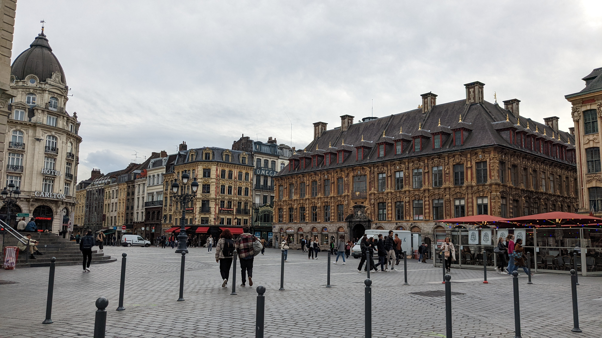

Un guide indépendant pour découvrir Lille sans les clichés : où manger, où sortir, où se perdre dans les ruelles du Vieux-Lille, et comment profiter de la ville comme un habitué plutôt que comme un touriste pressé.

Deux millions de visiteurs, 34 heures de chine non-stop, et des montagnes de moules-frites. Tout ce qu'il faut savoir avant le week-end du 5-6 septembre.
Lire le guide de la BraderieLe guide
La Braderie, les marchés de Noël, et tout ce qui rythme l'année lilloise.
Vieux-Lille, le Beffroi, le Palais des Beaux-Arts, la Citadelle — les incontournables et quelques adresses moins connues.
En savoir plusCarbonnade, welsh, gaufres de Meert, et les meilleures tables du Vieux-Lille pour tous les budgets.
En savoir plusDe la rue Solférino aux bars alternatifs de Wazemmes, où boire un verre selon l'ambiance recherchée.
En savoir plusBruges, Bruxelles et Tournai sont à moins d'une heure — de quoi prolonger le séjour.
En savoir plusPour organiser votre séjour
Lieux à visiter, restaurants et bars, positionnés sur une carte interactive.
En savoir plusLille en 24h, un week-end foodie, ou que faire quand il pleut.
En savoir plusTout ce qu'il faut savoir avant de venir, en un seul endroit.
En savoir plus